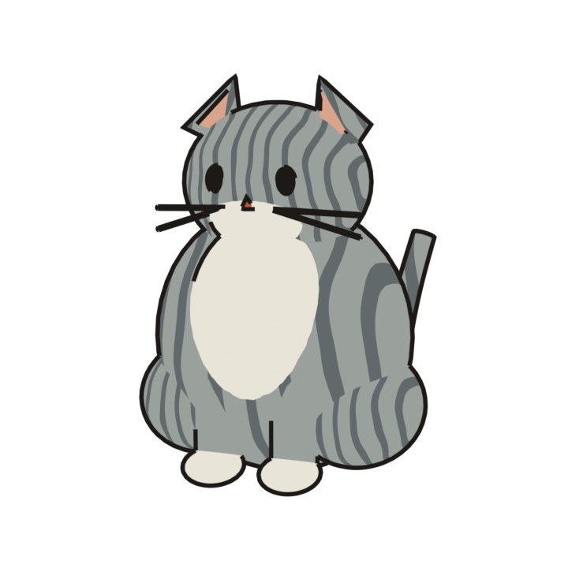

Under construction! Check back soon.


A 4-second loop rendered in Blender from a script: primitive shapes, two flat tones, Freestyle ink lines, transparent background. Safari plays the HEVC file, other browsers the WebM. With reduced motion on, the still frame shows instead.